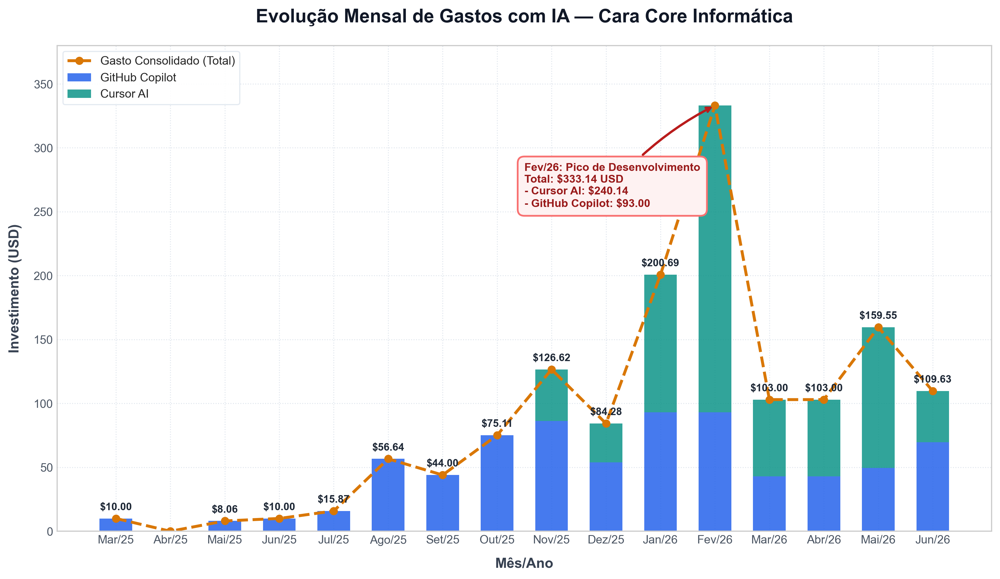

O Retorno do Investimento em Silício: O Custo e o ROI da IA na Cara Core Informática
- O Investimento: $1.489,59 USD (~R$ 7.671,39) em 15 meses, com média de R$ 494,25/mês.
- A Stack: GitHub Copilot (54% para micro-produtividade) e Cursor AI (46% para orquestração macro).
- O Retorno: Economia de 1 a 2 horas manuais por dia. ROI de tempo superior a 800% frente às taxas de mercado.
- A Tese: Uso de infraestrutura sob demanda na nuvem para equiparar o poder de entrega de uma única pessoa ao de um time completo.
No cenário tecnológico atual, a Inteligência Artificial oscila entre a propaganda utópica de substituição de equipes e o ceticismo de quem a considera um custo inútil.
Na Cara Core Informática, operamos com pragmatismo. Em 2025, identificamos que a escala tradicional de contratação de TI era inviável para nossa proposta de showcase. Decidimos, então, seguir outro caminho: competir com inteligência, não com tamanho. Tratamos a IA como infraestrutura de engenharia e, neste artigo, abrimos nossos custos reais para demonstrar o retorno desse posicionamento.
- Auditoria Financeira — O balanço consolidado de FinOps
- História de Bastidores — O ponto de inflexão na engenharia
- Divisão de Recursos — Copilot e Cursor em sincronia
- Métricas de Campo — Casos reais de aceleração de desenvolvimento
- Catálogo do Portfólio — Os produtos acelerados pela IA
- Equação de ROI — A matemática financeira comparativa
- Universidade Prática — O ganho em capital intelectual
1. Auditoria Financeira: O Custo Real da Operação
Nossa auditoria contábil compreende o período de 15 meses (março de 2025 a junho de 2026). Filtramos apenas os lançamentos efetivamente liquidados e descontamos estornos técnicos (como o reembolso parcial de $12,31 USD no Cursor em janeiro de 2026).
O balanço consolidado de FinOps aplicado à engenharia fechou em:
- GitHub Copilot: $800,91 USD (~R$ 4.124,69) para suporte diário de sintaxe.
- Cursor AI: $688,68 USD (~R$ 3.546,70) para refatorações complexas de contexto.
- Investimento Consolidado: $1.489,59 USD (~R$ 7.671,39 na taxa cambial média de R$ 5,15).
- Média Líquida Mensal: $95,97 USD (~R$ 494,25 por mês).
composer-2.5-fast) para refatorações estruturais.

Gráfico 1: Desembolso mensal combinado detalhando o pico operacional de Fevereiro de 2026.
2. Histórias de Bastidores: O Ponto de Inflexão
Em novembro de 2025, enfrentamos um gargalo técnico clássico: migrar uma arquitetura legada de sockets assíncronos que se ramificava por 14 arquivos isolados. Estávamos consumindo dias em revisões manuais cansativas e com alta propensão a erros de concorrência.
Decidimos alimentar o Composer do Cursor com o contexto completo do diretório e solicitamos uma arquitetura reativa orientada a eventos para unificar os callbacks. A IA mapeou o escopo, executou as alterações em lote nos 14 arquivos e entregou o código funcional em exatos 6 minutos. A partir desse dia, a IA deixou de ser um acessório de produtividade e passou a ser nossa linha base de infraestrutura.
3. Divisão de Recursos: A Stack de Assistência
Nosso orçamento de inteligência é distribuído de forma estratégica em duas camadas:
- GitHub Copilot (54% do aporte): Atuação no nível microscópico. Focado em autocompletar código em tempo real, sugerir sintaxes triviais e acelerar a digitação mecânica.
- Cursor AI (46% do aporte): Atuação no nível macro. Utilizado como editor nativo de IA para entender o grafo de dependências do repositório, propor padrões arquiteturais e realizar edições estruturais em lote.
4. Métricas de Campo: O Impacto nos Ciclos de Desenvolvimento
Abaixo, catalogamos as métricas de tempo mensuradas empiricamente ao comparar o fluxo tradicional de codificação manual com o fluxo assistido por IA:
| Atividade Técnica | Esforço Manual (Estimado) | Esforço com IA (Mensurado) | Diferença Operacional |
|---|---|---|---|
| Refatoração estrutural multi-arquivo | ~ 6 horas | ~ 20 minutos | - 94% |
| Geração de código de inicialização (boilerplate) | ~ 1,5 hora | ~ 5 minutos | - 94% |
| Depuração de vazamentos de recursos (debugging) | ~ 2 horas | ~ 10 minutos | - 91% |
| Cobertura de testes automatizados integrados | ~ 3 horas | ~ 30 minutos | - 83% |
5. O Portfólio Acelerado
Nosso portfólio de produtos e showcases foi viabilizado e otimizado sob esta infraestrutura de engenharia ágil:
Rust / Tauri 2 / SQLite
Ponto de venda offline-first. A IA reduziu em 75% o tempo de mapeamento de chamadas JNI/Rust no ciclo inicial do Tauri 2.
Java 25 / Spring Boot 4
SaaS condominial multi-tenant. O uso de IA acelerou a validação das regras de isolamento lógico no banco de dados.
OAuth 2.1 / OIDC / PKCE
Showcase de identidade digital. A IA gerou a lógica de parser de tokens JWT e verificação criptográfica de assinaturas.
Desktop Toolkit
Gerenciador local de compromissos. A IA otimizou em 60% a renderização da interface gráfica do calendário reativo.
Python / Lógica
Oficina de lógica e algoritmos. Geração instantânea de massa de dados mockada e cenários de testes locais.
Python / Metalurgia
Simulador científico de processos químicos. A IA traduziu diretamente equações físico-químicas em código limpo.
6. A Matemática Financeira do ROI
A viabilidade econômica do nosso ecossistema baseia-se em dados consolidados de mercado e FinOps:
- Benchmarking de Custo: A taxa de um desenvolvedor sênior no Brasil varia entre R$ 120 e R$ 200 por hora. O investimento mensal de R$ 494,25 equivale a apenas 3 horas de esforço terceirizado de desenvolvimento.
- Ganho Operacional Mapeado: Ao economizar de 1 a 2 horas de trabalho mecânico diariamente, geramos o equivalente a 30 horas de engenharia por mês. O ROI financeiro direto ultrapassa 800% (cerca de R$ 4.000 mensais em horas técnicas salvas).
- Alavancagem de Hardware: Em vez de investir milhares de reais em computadores de ponta locais para processar modelos de linguagem, terceirizamos todo o processamento pesado para a nuvem através de nossas assinaturas, mantendo nosso hardware existente funcional e eficiente.
7. IA como Faculdade Prática
A velocidade de atualização dos modelos de inteligência excede o tempo de adaptação das ementas universitárias tradicionais. Encaramos as assinaturas de IA como nossa mensalidade de laboratório aplicado, onde nosso time desenvolveu competências críticas de engenharia de software assistida por IA:
- Arquitetura Direcionada por Contexto: Domínio de arquivos de parametrização (como o
.cursorrules) para guiar os modelos de linguagem a respeitarem convenções estritas de Clean Architecture e testes. - Sensibilidade cambial e FinOps de tokens: Aprendizado prático sobre quando acionar modelos rápidos (
composer-2.5-fast) para refatorações estruturais ou reservar modelos sêniores para dilemas complexos de design. - Revisão Crítica de Código (Code Review): Amadurecimento técnico para atuar como auditor sênior das sugestões dos modelos, identificando e corrigindo vulnerabilidades sintáticas e de concorrência.
Conclusão
A análise de custos dos últimos 15 meses comprova que a alocação de recursos em IA foi altamente eficiente. Terceirizar a força bruta de codificação mecânica para a nuvem nos permitiu focar no design arquitetural e manter uma vitrine técnica robusta com baixo custo fixo.
“Não competimos com tamanho — competimos com inteligência.”
Hashtags
Contato
- E-mail: suporte@caracore.com.br
- Site: www.caracore.com.br
- LinkedIn: Cara Core Informática
Conheça as ferramentas da nossa vitrine técnica e veja o potencial da engenharia alavancada por IA.
Visitar Site Oficial
Artigo publicado em 10 de janeiro de 2027
© 2027 Cara Core Informática. Todos os direitos reservados.